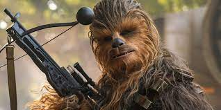

All About Chewbacca
A legendary Wookiee warrior and Han Solo’s longtime co-pilot, Chewbacca continues to serve as faithful first mate to carry out daring missions against the First Order behind the controls of the Millennium Falcon. Known as Chewie to his closest friends, he was part of a core group of rebels who restored freedom to the galaxy during the reign of the Galactic Empire. Known for his short temper and accuracy with a bowcaster, Chewie also has a big heart and unwavering loyalty to his friends.